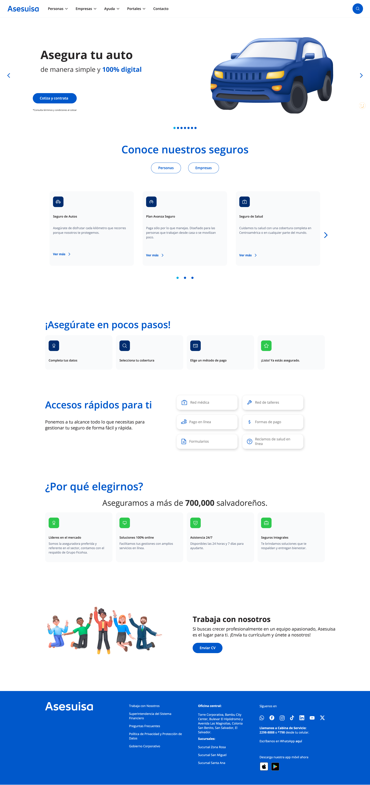

UX/UI y producto
Flujos, arquitectura, wireframes, prototipos y decisiones de interfaz con foco en claridad.
Melisa Delgado · Portfolio UX/UI 2026
Soy una UX/UI Designer con 5 años de experiencia diseñando productos digitales, experiencias web y sistemas visuales claros, humanos y escalables.
Trabajo entre estrategia, interfaz, comunicación visual, Webflow y herramientas no-code para transformar contextos complejos en experiencias más simples de usar.

preguntar
entender
ordenar
curiosity as a method
Mi curiosidad no es solo una forma de mirar el mundo. Es una herramienta de trabajo: me ayuda a hacer mejores preguntas, encontrar patrones, ordenar información y diseñar experiencias más claras.
Mi enfoque
Me gusta entrar en contextos complejos, entender qué necesita cada usuario y convertir esa información en experiencias claras, consistentes y posibles de implementar.
Flujos, arquitectura, wireframes, prototipos y decisiones de interfaz con foco en claridad.
Componentes, tokens, CMS, responsive y diseño pensado desde la implementación real.
Base gráfica, criterio visual, papel, ilustración y recursos que hacen más humana la experiencia.
Featured Work
Rediseño web, comunicación visual, sistemas escalables, herramientas no-code, inteligencia artificial y aprendizaje continuo.

Rediseño web, design system y Webflow para una marca de seguros más clara, humana y escalable.
Leer casoComunicación visual, mejora continua y CMS bilingüe para una web institucional con impacto social.
Leer casoEstrategia, curaduría, no-code e inteligencia artificial para diseñar mi portfolio como producto.
Leer casoProject Archive
También trabajé en plataformas gubernamentales, sistemas internos, fintech, ERP, mobile apps y productos confidenciales. Algunos proyectos están disponibles como resumen público; otros los comparto en entrevistas de forma anonimizada.
Learning by Building
Proyectos propios donde exploro herramientas, pruebo ideas y aprendo construyendo.
Primera web propia con asistencia de IA, GitHub, Vercel, Firebase Auth y Firestore.
Herramienta personal de gasto tracking para explorar estructura, datos y automatización.
Graphic Design
Mi base en diseño gráfico fortalece mi criterio visual, mi atención al detalle y mi capacidad para crear experiencias digitales consistentes.
Identidad visual y estrategia de marca para una marca de muebles a medida pensada para la vida real.
Leer casoSkills
Discovery · arquitectura · flujos · wireframes · prototipos
Design systems · componentes · tokens · CMS · documentación
Webflow · responsive · Firebase · Vercel · GitHub · IA asistida
UI · gráfica web · banners · campañas · comunicación visual
About
Soy una UX/UI Designer con visión estratégica y enfoque centrado en el usuario. Me interesa sumarme a equipos remotos donde pueda aportar criterio de producto, claridad en la experiencia y una mirada integral del diseño.
Conocer más